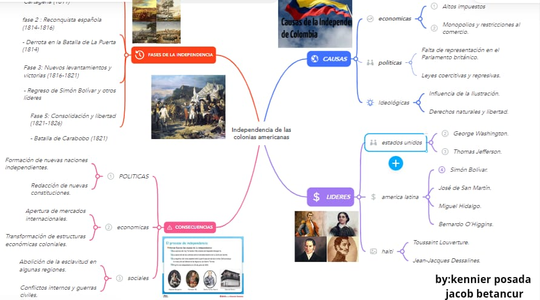

CIENCIAS SOCIALES
1.

2.Texto sobre la identidad nacional colombiana
La identidad colombiana Colombia es un país de contrastes geográficos y culturales que siempre ha sido una identidad nacional rica y compleja a lo largo de su historia esta identidad colombiana se caracteriza por: su diversidad étnica. la diversidad étnica es uno de los aspectos más importantes de la población colombiana pues se trata de un país que desde su Constitución Política reconoce y protege la diversidad étnica y cultural de la nación. Los grupos étnicos son poblaciones que cuyas condiciones y prácticas sociales culturales y económicas los distinguen del resto de la sociedad y que a pesar de las diferencias han ha mantenido su identidad a lo largo de la historia. Desafíos y perspectivas Colombia es un país tan diverso en un proceso constante y lleno de desafíos algunos de estos principales retos son la desigualdad social la desigualdad social tiene que ver con las grandes diferencias económicas y sociales qué estás generan presiones difícilmente dificultan la construcción de un sentimiento el conflicto armado: el conflicto armado ha dejado cicatrices en la sociedad colombiana y ha afectado mucho la cohesión social bueno señores mira que no hay nada primero una serie los colombianos hemos tenido una lucha constante por superar las adversidades y hemos trabajado para tener una comunidad más justa Y equitativa donde la diversidad sea valorada hace algo que nos une los elementos que conforman este son la gastronomía la comida de Colombia es una fusión de sabores indígenas africanos y europeos los cuales son más llamados los platos típicos como los frijoles el sancocho y los símbolos patrios la bandera el escudo y el himno estos símbolos patrios representan muchas cosas entre una de ellas son la unidad de soberanía en la nacion.